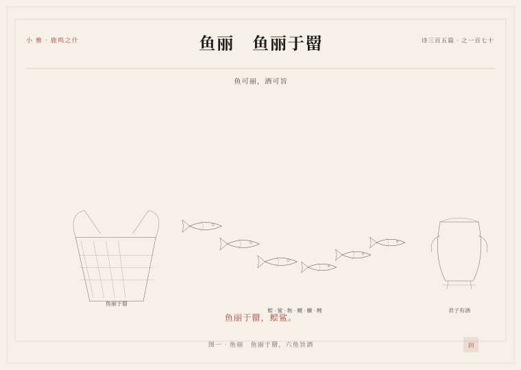
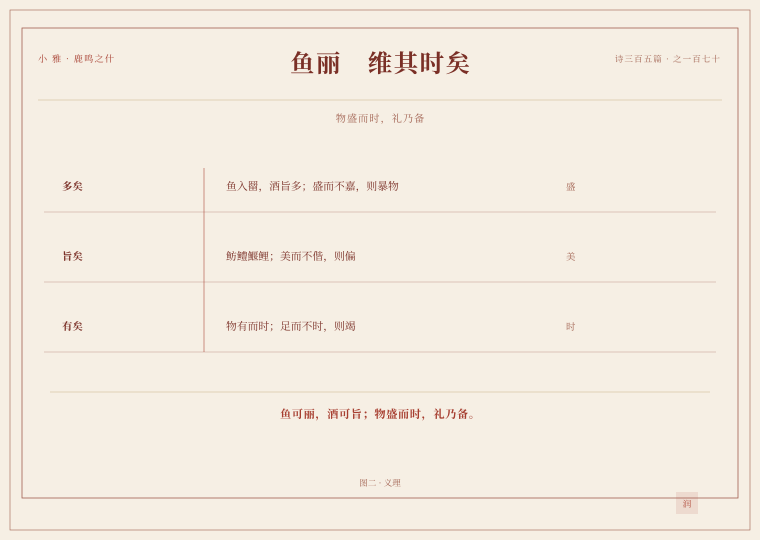

第一百七十篇 鱼丽
小雅 · 鹿鸣之什 SJ170
朗读 · 普通话
依经文原文朗读，章次不读出；配古琴底乐，不改速、不加拖腔。全库同一音色（豆包 TTS），非播音员录制。
一 解题
诗三判：
- 谁在说：宴飨之人。见鱼入罶，鲿鲨、鲂鳢、鰋鲤相继；君子有酒，旨且多、多且旨、旨且有。
- 说什么事：六章。前三章以鱼起，写酒之多、旨、有；后三章以「物其多矣」「旨矣」「有矣」收，归於「嘉」「偕」「时」。
- 为何编在此：鹿鸣之什十篇，以鹿鸣燕宾始，以鱼丽美万物终；由礼入物，由物入时。
小雅之首什，收于「时」。
《毛序》：「《鱼丽》，美万物盛多，能备礼也。文武以《天保》以上治内，《采薇》以下治外，始于忧勤，终于逸乐，故美万物盛多，可以告于神明矣。」
朱子《诗集传》：「兴也。丽，历也。罶，曲梁也，寡妇之笱也。鲿，扬也。鲨，鮀也。旨，美也。」二章：「鲂，鲂鱼。鳢，鲖也。」三章：「鰋，鲇也。鲤，鲤也。」四章：「嘉，善也。」五章：「偕，齐也。」六章：「时，及时也。」
本库的看法：《鱼丽》不是一首夸富的诗，是一首「以时收盛」的诗。
鱼入罶，是得；酒旨多，是备；然末三章不夸多，只说「嘉」「偕」「时」。多而不嘉，则暴物；嘉而不偕，则偏；偕而不时，则竭。
大道在「时」：万物盛多，不如万物及时。
须辨：丽是历、附着，不是美丽；罶是曲梁、鱼笱，不是竹篮；鲿鲨是鱼名，不是鲿与鲨两种泛称；偕是齐，不是皆；时是及时，不是时运。断语：鱼可丽，酒可旨；物盛而时，礼乃备。
先辨五事：「丽」是历、附着，不是美丽；「罶」是曲梁、鱼笱，不是竹篮；「鲿鲨」是鱼名，不是鲿与鲨的泛称；「偕」是齐，不是皆；「时」是及时，不是时运。
二 经文
第一章
鱼丽于罶，鲿鲨。君子有酒，旨且多。
第二章
鱼丽于罶，鲂鳢。君子有酒，多且旨。
第三章
鱼丽于罶，鰋鲤。君子有酒，旨且有。
第四章
物其多矣，维其嘉矣。
第五章
物其旨矣，维其偕矣。
第六章
物其有矣，维其时矣。
三 韵读
- 一章：罶、鲨、酒、多，幽、鱼、歌相叶。声实。
- 二章：罶、鳢、酒、旨，幽、脂相叶。声厚。
- 三章：罶、鲤、酒、有，幽、之相叶。声满。
- 四章：多、嘉，歌、麻相叶。声开。
- 五章：旨、偕，脂、皆相叶。声齐。
- 六章：有、时，之部相叶。声收。
读法：前三章「旨且多、多且旨、旨且有」是三换位，不是三重复；后三章「多—嘉、旨—偕、有—时」是三收束。由多入嘉，由旨入偕，由有入时，愈收愈高。
四 字义与名物
- 丽：历、附着。罶：曲梁、鱼笱。鲿：鲿鱼。鲨：鮀鱼。君子：宴主。旨：美。多：丰多。
- 鲂：鲂鱼。鳢：鲖鱼。鰋：鲇鱼。鲤：鲤鱼。有：富有。
- 物：万物、食物。嘉：善。偕：齐。时：及时。
五 今译
一章：鱼入罶中，鲿鱼鲨鱼。君子有酒，美且多。
二章：鱼入罶中，鲂鱼鳢鱼。君子有酒，多且美。
三章：鱼入罶中，鰋鱼鲤鱼。君子有酒，美且有。
四章：物产多啊，贵在善啊。
五章：物产美啊，贵在齐啊。
六章：物产有啊，贵在及时啊。
六 章旨
- 一章：鱼丽于罶，是「得」；旨且多，是「备」；得而备，礼之始。
- 二章：鲂鳢，是「异味」；多且旨，是「厚」；多而不美，则徒多。
- 三章：鰋鲤，是「异形」；旨且有，是「足」；美而有，礼乃成。
- 四章：物多，是「盛」；维嘉，是「善」；盛而善，则不为暴。
- 五章：物旨，是「美」；维偕，是「齐」；美而齐，则不为偏。
- 六章：物有，是「足」；维时，是「及时」；足而时，则不为竭。
七 诗教
- 盛多须有礼：鱼多、酒多，不是目的；「嘉」「偕」「时」才是礼；无礼之盛，是暴殄。
- 时最重：万物各有其时，取之以时，则生生不竭；「维其时矣」四字，是全部诗眼。
- 宴以告神：诗序说「可以告于神明」，是物盛而礼备，非以物夸神。
八 分寸与边界
- 不把「丽」读成美丽：丽是历、附着；读成美，则「鱼丽于罶」成鱼美。
- 不把「罶」读成竹篮：罶是曲梁、鱼笱；读成篮，则捕鱼之制失。
- 不把「鲿鲨」读成两种泛称：皆鱼名；泛称，则名物不清。
- 不把「偕」读成皆：偕是齐；读成皆，则「维其偕」成重复。
- 不把「时」读成时运：时是及时；读成运，则「维其时」成宿命。
九 存疑
- 诗旨：毛序「美万物盛多，能备礼」，朱子从之；一说「燕飨」。本库从美物备礼，兼取燕飨。
- 「丽」：毛传「历也」；一说「丽，著」。从历、附着。
- 「罶」：毛传「曲梁也，寡妇之笱也」；朱子同。从曲梁、鱼笱。
- 「鲿鲨」：毛传「鲿，扬也；鲨，鮀也」。从鱼名。
- 「时」：一说「时，善也」。从及时。
十 跨典
- 《礼记》「礼者，履也」；此篇由鱼酒之实，见礼之履。
- 《老子》「五味令人口爽」；此篇以「嘉」「偕」「时」节之，正是不爽。
- 《孟子》「不违农时」；此篇「维其时矣」，是取物以时。
十一 双卡与图
六对：
| 丽（历、附着） |
丽（美丽） |
| 罶（曲梁、鱼笱） |
罶（竹篮） |
| 鲿鲨（鱼名） |
鲿鲨（泛称） |
| 偕（齐） |
偕（皆） |
| 时（及时） |
时（时运） |
| 嘉（善） |
嘉（夸奖） |

图一 · 鱼丽 鱼丽于罶，六鱼旨酒

图二 · 鱼丽 物盛而时，礼乃备